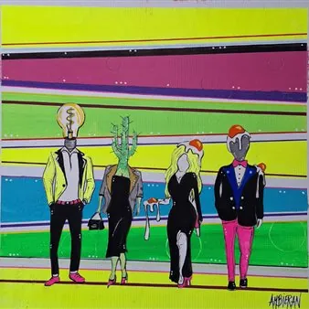

da sab 3 ott a gio 15 ott · dalle 11:00
"Labili equilibri" in mostra al Caffè Carducci
Marco Cristofoli, in arte Ambieran, è il protagonista della mostra intitolata "Labili equilibri", allestita dal 3 al 15 ottobre 2026 nello spazio espositivo dello Storico Caffè Carducci, in via Duca d'Aosta 83 a Monfalcone, proposta in collaborazione con AudiartCurator…
 Indicazioni
Indicazioni
- Costi e prenotazioni
- Costo non indicato · Prenotazione non indicata
- Programma
- Programma da verificare. Apri la fonte ufficiale per orari e possibili aggiornamenti.
- In caso di maltempo
- Nessuna indicazione specifica pubblicata.
- Note
- Acquisito automaticamente dalla fonte.
L’EVENTO
Descrizione completa
Marco Cristofoli, in arte Ambieran, è il protagonista della mostra intitolata "Labili equilibri", allestita dal 3 al 15 ottobre 2026
nello spazio espositivo dello Storico Caffè Carducci, in via Duca d'Aosta 83 a Monfalcone, proposta in collaborazione con AudiartCurator - art&curatorial projects.
L'inaugurazione è prevista per sabato 3 ottobre 2026 alle ore 11:00, con presentazione a cura della dottoressa Emanuela Audia.
Marco Cristofori è nato in provincia di Verona nel 1975 e dal 2008 vive e lavora a Trieste. E' un'artista autodidatta per scelta consapevole: "dipingo e sporco le mani fin da bambino per il puro e viscerale piacere di creare", racconta Ambieran. Irrequieto per natura e libero da schemi accademici, ama muoversi tra Pop Art, astrattismo materico, surrealismo, illustrazione, psichedelia e Street Art. Predilige i colori vivi e accesi, saturi di contrasto, che sembrano quasi esplodere dalla superficie del supporto. Come rivela lo stesso Ambieran, "Non amo sovraccaricare le mie opere di concetti prefabbricati: la mia è un’arte estemporanea. Quando creo, creo l'atmosfera ideale - la musica giusta, un buon bicchiere di vino - e lascio che il pensiero del momento si riversi direttamente sulla tela". "L'uovo è da sempre il simbolo primordiale della vita, della forza e dell'energia nutrice.
Nelle opere dell'artista assume un ruolo centrale l'uovo, che rappresenta la metafora di un perfetto-imperfetto in labile equilibrio. "L'uovo è da sempre il simbolo primordiale della vita, della forza e dell'energia nutrice. Il tuorlo è perfetto nella sua rotondità, ma allo stesso tempo è fragilissimo e pronto a rompersi; l'albume, al contrario, ha bordi irregolari e fluidi, ma ben definiti. È esattamente così che vedo l'esistenza umana: un continuo ricomposersi tra forza, fragilità, limiti ed equilibrio precario."
Nel corso degli anni Ambieran ha esposto in mostre personali in diverse città, tra cui Garda, Verona, Portogruaro, Trieste, Nogara, oltre ad esibizioni collettive a Schio, Vicenza, Asolo, Trieste, Vienna, Grisignana, collaborando anche come illustratore per la casa editrice Cyrano Comics e per progetti legati ai racconti del mistero.
"Labili equilibri" è visitabile negli orari di apertura del Caffè Carducci: dal martedì al giovedì 7:30-20:30; il venerdì 7:30-21:30; il sabato 8:00-21:30; la domenica e i festivi 8:00-20:30.
Ingresso libero.
Per maggiori informazioni contattare il curatore, Paolo Posarelli: tel. 334 5078439.
IL PROGRAMMA
Programma e orari
Appuntamenti raccolti dalle fonti elencate. Dove manca un orario, non è ancora disponibile in questa scheda.
Programma pubblicato
- Dal 2026-10-03 al 2026-10-15
INFORMAZIONI UTILI
Prima di partire
- Controllare la fonte prima di partire.
ORGANIZZAZIONE